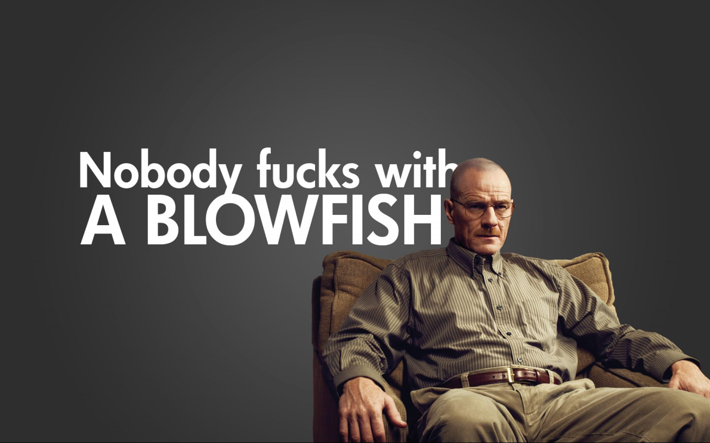

The Power of About Me Sections
Nov 17, 2015
How can your curiosity lead you to be smarter, more creative, and more successful in your career?
Imagine yourself as a small child. The world is new and awesome and confusing. One day, you see an animal for the first time: it walks on four legs, it's fluffy, and has big ears. This is a dog, your parents tell you. Later, you see another fluffy, four-legged creature with big ears, and assume it too is a dog. When your parents explain this new animal is a cat, you adjust your mental framework of the world.This is a fun fact that you can put in here. Sometimes it even goes on for two sentences. Maybe three. You begin to notice the less obvious differences between a dog and a cat, compared to those between a dog and a human. As you grow older, you refine these mental frameworks to account for the more subtle differences between things. When before you looked for the visible differences between dogs and cats, now it becomes more nuanced, such as learning to differentiate between a genuinely friendly person and someone with ulterior motives.
We classify the world around us and the people in it with an ever-increasing number of dimensions. Tall to short, honest to dishonest, harmless to dangerous, and so on. The ability to notice and act on subtle differences like this is a skill you can develop like any other. Cognitive Complexity, as psychologists call it, is a measurement of this skill , and like most terms in social sciences, the name makes it sound more complicated than it is. You can think of it from two angles: differentiation and integration.
Differentiation refers to our ability to categorize something using many dimensions rather than just a few. It's the number of mental models or angles we use to understand the world. Let's say you read a story, and you form an opinion of the antagonist, who we'll call Chad. If your only dimension for forming opinions is "bad or good," you might label Chad as evil. Someone could then say you show a low level of cognitive complexity in this area. Meanwhile, someone with more developed differentiation would not describe Chad as evil. Instead, they would consider the less obvious angles, and might decide Chad is misunderstood. Maybe he has underdeveloped empathy, or has high levels of ambition and cynicism as a result of many other unknown factors.
Integration describes our ability to find connections and patterns between things on different dimensions. It's our capacity to look for the parallels between our mental models. Take, for instance, a typical indecisive college student. She might study a range of subjects, from art, business, software engineering, and chemistry. If she sees them as completely distinct topics, she shows less ability to integrate information than someone who notices patterns and similarities between them. A student with stronger integration skills doesn't assume rigid boundaries, and might identify patterns like the cycle of trial, error, learning, and iteration that shows up in each of these fields.
Mental Models and Social Development
While you start out as a child with about the same level of joyful ignorance as every other child, over time you have a vastly different upbringing from the rest. You have different experiences, different education, and different conversations with both peers and adults. Genetics aside, over time the conversations you choose to have (or to not have) with friends mold your personality, as well as how you see both yourself and the world. In much the same way, words from the sources of authority in your life shape the way you interpret it in countless different ways. As you get older, you gain more control over the information you seek (and how you choose to understand it), and your ideas about how the world works become increasingly more unique from the person sitting next to you.
Advancing Through Ambiguity
While preparing for long term international travel these past several months, I needed a lot of vaccinations. Injections for the average person are few and far between, but when you get so many in such a short time span, you start to notice little differences. One day, the pharmacist paused with the needle, just a couple moments longer than anyone else had. I asked her if something was wrong. She said "no, no, I've just never given an injection before."
Creativity is just connecting things. When you ask creative people how they did something, they feel a little guilty because they didn't really do it, they just saw something. It seemed obvious to them after a while. That's because they were able to connect experiences they've had and synthesize new things.
Sometimes a doctor prescribes you that new expensive drug because it's the most effective treatment available, but other times it's because pharmaceutical companies like Johnson & Johnson or Pfizer are giving the medical industry financial incentive to do so. As profits on brand name pharmaceuticals rise, companies influence hospitals through many methods, some of which are not always legal.